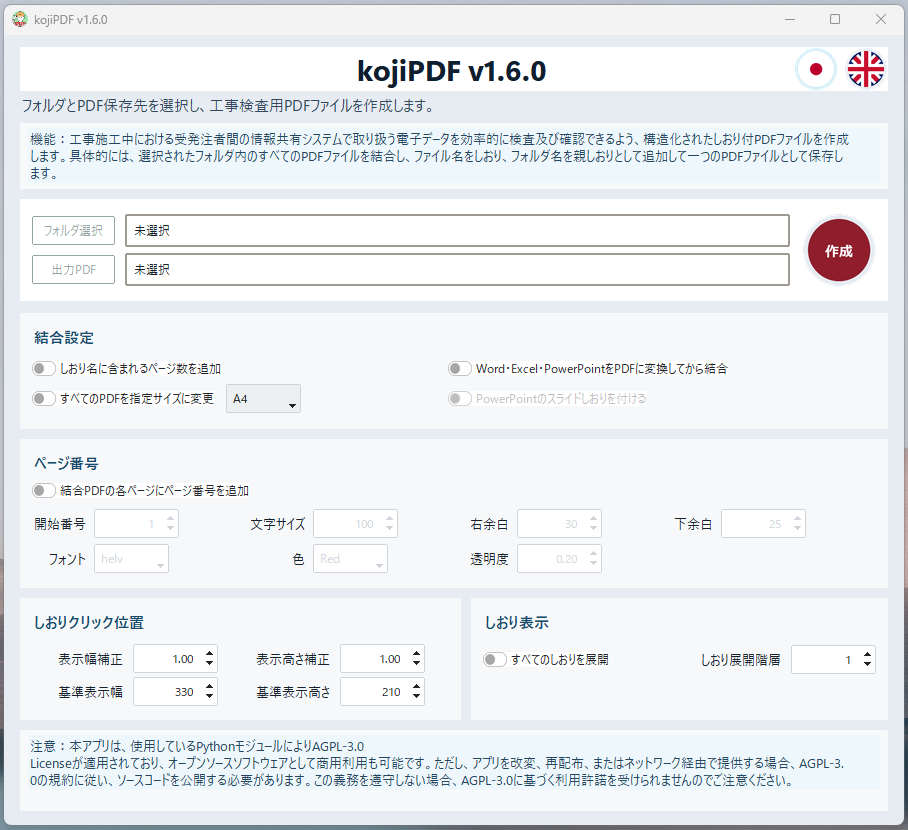
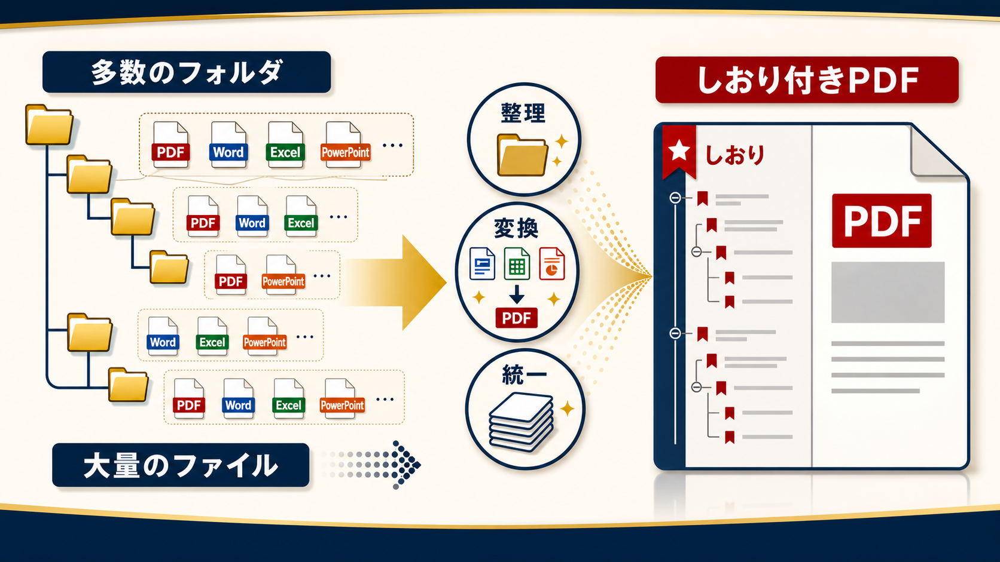

検査資料を、探しやすい一つのPDFへ。
KojiPDFは、工事施工中に扱う電子データを検査・確認しやすいPDFにまとめるためのツールです。選択したフォルダ内のPDFを結合し、ファイル名とフォルダ名を使ってしおり付きPDFとして保存します。
フォルダ単位で結合
サブフォルダまで読み取り、資料一式をまとめて処理できます。
しおりを自動作成
フォルダ名を親しおり、ファイル名を子しおりとして追加します。
Office変換に対応
Word・Excel・PowerPointをPDFに変換してから結合できます。

複雑なフォルダも、しおり付きPDFへ。
各フォルダに複雑に入っているPDF、Word、Excel、PowerPointファイルを整理し、フォルダ構造を活かしたしおり付きPDFとしてまとめます。

紙に戻らざるを得なかった悔しさから。
某市の工事関係書類を電子化したものの、何万枚もの資料の中から必要な書類を瞬時に探し出すことができず、結局は紙の書類で検査せざるを得なかった経験がありました。そのとき、当時はまだ今ほど賢くなかった生成AIを使いながら、ファイル名や構造化されたフォルダをPDFのしおりに変換すれば、工事検査で本当に使える電子書類になるのではないかと思いつきました。そこから夢中で作り上げたのがKojiPDFです。
後になって思いがけず、同じ仕組みが大量の資料を扱うペーパーレス会議にも役立つことが分かりました。そこで、Word・Excel・PowerPointなどを自動でPDFに変換する機能、用紙サイズを統一する機能、資料の邪魔になりにくい透過文字のページ番号などを追加し、検査資料だけでなく会議資料も扱いやすい形へ育てていきました。

操作は4ステップ。
フォルダを選び、保存先を決め、必要な結合設定を選んだら作成するだけ。ページ番号、しおり表示、用紙サイズ変更などの設定も同じ画面で調整できます。
フォルダ選択
結合したいPDFやOfficeファイルが入ったフォルダを選択します。
出力PDF指定
保存先と完成PDFのファイル名を指定します。
結合設定
しおり、ページ番号、用紙サイズ、Office変換の設定を調整します。
作成
赤い作成ボタンで処理を開始。完了後、一つのPDFとして保存されます。
実際の動きも確認できます。
同じフォルダ内の動画素材を使って、ホームページ上でKojiPDFの操作イメージを見られるようにしました。詳しい手順はチュートリアルページへ進んでください。
KojiPDFを試す
セットアップ、ソースコード、更新情報はGitHubのリリースページから確認できます。